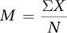
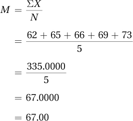
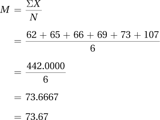
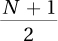
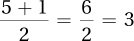
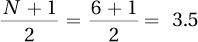
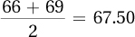
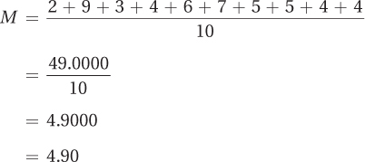
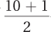
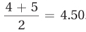

Central tendency tells the typical or average score in a set. Statisticians use central tendency as a summary value for a set of scores, much the way the midpoint was used for intervals in a grouped frequency distribution. Usually central tendency is the value at the center of a set of scores. Mean, median, and mode are the three most common measures of central tendency.
80
The mean is what most people think of when they contemplate the average. It is the sum of all the values in a set of data divided by the number of cases. The formula for M, the sample mean, is shown in Equation 3.1.

where M = the mean of a sample
∑ = summation sign
X = the values of X for the cases in the sample
N = the number of cases in the sample
For practice in using Equation 3.1, imagine that a demographer has selected five adults from the United States and measured their heights in inches. Here are the data she collected: 62, 65, 66, 69, and 73. Applying Equation 3.1, she would calculate the sample mean:

The demographer would report, “The mean height for the sample of five Americans is 67.00″ or 5′ 7″.”
81
An additional way that a mean can be used is to find out how much a single score, X, deviates from it. This is called a deviation score. A deviation score is calculated by subtracting the mean from a score:
Deviation score = X – M
Deviation scores in a normal distribution are shown in Figure 3.1. No matter the shape of a distribution of scores, a positive deviation score means that the score is above the mean, a negative deviation score means that the score is below the mean, and a deviation score of zero means that the score is right at the mean. Table 3.2 shows the deviation scores for the heights of the five Americans.
Note, in Table 3.2, that the sum of the deviation scores equals zero. This is always true: the sum of a set of deviation scores is zero. The mean is the central score in a set of scores because it balances the negative deviation scores on one side of it with the positive deviation scores on the other side of it. This is shown in Figure 3.2, where the mean is the fulcrum of a seesaw balancing the five height deviation scores. Deviation scores rely on information about distance between scores, so the mean can only be used with interval- or ratio-level data.
82
One problem with the mean is that it can be influenced by an outlier, an extreme score that falls far away from the rest of the scores in a data set. Robert Wadlow, the world’s tallest man, is an example of an outlier. Wadlow was born in 1918 and had an overactive pituitary gland that caused him to grow to 8′ 11″. In Figure 3.3, you can see Robert Wadlow standing next to two average height women. In terms of height, Robert Wadlow is an outlier.
Imagine Robert Wadlow, at 107″, being added to the demographer’s sample of five Americans, making it a sample of six. The mean, which had been 67.00 when there were only five cases, would now be

Adding one outlier, Robert Wadlow, causes the average height to jump from 5′ 7″ to about 6′ 2″, a jump of almost 7″. That’s a big impact for a single case to have on the mean. Being influenced by outliers is a problem for the mean. The next measure of central tendency, the median, is not as influenced by outliers.
83
The median is the middle score, the score associated with the case that separates the top half of the scores from the bottom half. The median focuses on direction (more/less) and ignores information about the distance between scores. Because of this, the median can be used with ordinal data (unlike the mean). The abbreviation for median is Mdn.
The easiest way to calculate the median is to use the counting method, shown in Equation 3.2. By this equation, the median is the score associated with case number .
Step 1 Put the scores in order from low to high and number them (1, 2, 3, etc.).
Step 2 Find the X value associated with the score number
where X = raw score
N = number of cases in the data set
Here’s how to calculate the median for the original height data set, the one with only five cases:
In Table 3.3, the five heights are listed in order and the numbers 1–5 are assigned to them.
According to Equation 3.2, the median is the raw score associated with the score number .
Calculate .
The median is the score associated with the third case.
Looking in Table 3.3, one can see that the third case has an X value of 66.
So, the median is 66.00. One could say, “The median height for these five Americans is 5′ 6″.”
Figure 3.4 shows how the median is also the central score in a set of scores, but in a different way than the mean is. Just as many cases fall below the median as fall above it. Notice how the distance between cases is ignored with the median.
84
One advantage of the median over the mean is that it can be used with ordinal-level data. Another is that the median is less influenced by outliers. Let’s see what happens to 66.00, the median for the five scores, when the outlier, 107″ Robert Wadlow, is added. According to Equation 3.2, now that there are six scores, the median case is score number 3.5 and the median is the value associated with this case:

Table 3.4 shows the six cases and there is no case numbered 3.5. There’s a case number 3, with a height of 66″, and a case number 4, with a height of 69″. Statisticians are happy to have fractional cases, so case number 3.5 is halfway between case 3 and case 4. Similarly, the X value associated with case 3.5 is halfway between the raw scores associated with those two cases, 66 and 69. Another way of saying this is that the median in such a case is the mean of the two values:

The median for the six cases is 67.50.
Before the outlier was added, the median was 66.00. Adding the outlier changed the median, but doing so only moved it 1.5″ higher. Compare this to the almost 7″ that the same outlier added to the mean. Medians are less affected by outliers than are means because they don’t take distance information into account. This is an advantage for the median.
85
The third measure of central tendency is the mode, the score that occurs with the greatest frequency. For the height data, there is no mode. Each value occurs with the same frequency, once, and there is no score that is the most common. Looking back at Table 2.15, the data for the sex of students in a psychology class, the most common value is female, so that is the mode. This points out an advantage of the mode: the mode can be used for nominal data (unlike the mean or the median).
It is important to know how to select the correct measure of central tendency to represent a given set of data. Table 3.5 shows which measure of central tendency can be used with which level of measurement:
If one has nominal data, there is only one option for a measure of central tendency, the mode.
With ordinal data, there are two options for a measure of central tendency, the mode or the median.
If one has interval- or ratio-level data, there are three options: mode, median, or mean.
When there are multiple options for a measure of central tendency, choose the measure of central tendency that takes into account the most information:
The mode only takes same/different information into account.
The median takes same/different information into account, as well as direction information.
The mean takes same/different, direction, and distance information into account.
Choose the measure of central tendency that conveys the most information.
Remember: Choose the measure of central tendency that conveys the most information. So, with interval- or ratio-level data, the “go to” option is the mean. However, there are conditions where it is better to fall back to a different measure of central tendency for interval- or ratio-level data.
To decide which measure of central tendency to choose for interval or ratio data, one should make a frequency distribution and think about the shape of the data. If there are outliers or if the data set is skewed, the mean will be pulled in the direction of the outliers or the skew and won’t be an accurate reflection of central tendency. In these situations, the median is a better option. If the data set is bimodal or multimodal, a mean or a median may not be appropriate. In the bimodal data in Figure 3.5, the mean and median fall in a no-man’s land where there are few cases. Does a score in this region typify the data set? No. In this situation, reporting the multiple modes makes more sense.
86
Q What does it mean if the mean and the median for a set of data are very different from each other?
A It could mean that the data set is skewed. When the mean is bigger than the median, that suggests positive skew. When the mean is smaller than the median, that suggests negative skew.
Here’s a small data set for practice calculating central tendency. Suppose a psychologist decided to base some research on the famous “Bobo doll” experiment (Bandura, Ross, & Ross, 1961). In that study, children saw an adult interact with a Bobo doll, an inflated doll with a weighted base that bounces back up when it is punched. Some of the kids saw the adult behave aggressively toward Bobo and other kids didn’t. The kids who saw aggression modeled later behaved more aggressively toward Bobo.
Our researcher, Dr. Gorham, put together a sample of 10 third graders and had each of them watch an adult physically attack Bobo. Each child was then left alone in a room with Bobo and other toys for 5 minutes. Dr. Gorham observed and counted how many times each child verbally insulted Bobo. Each time a child used a negative word to address Bobo, for instance, called him “stupid” or “ugly,” was counted. Here are the totals for number of aggressive comments: 2, 9, 3, 4, 6, 7, 5, 5, 4, and 4. What value should Dr. Gorham use to represent the average number of aggressive comments for this sample?
87
The first thing to do is figure out which measure of central tendency is most appropriate. The data, number of aggressive comments, are measured at the ratio level, so Dr. Gorham could use mean, median, or mode (see Table 3.5). His initial plan should be to use the mean, which utilizes all the information in the numbers. To make sure the mean will work, he needs to check the shape of data and confirm that it is not skewed or multimodal.
The distribution, shown in Figure 3.6, doesn’t look unusual in terms of modality or skewness, so the mean still seems appropriate. However, to compare all three, Dr. Gorham calculates all three measures of central tendency.
He calculates the mode first, because it is the easiest. Looking at Figure 3.6, he sees one peak, at 4, so he can report that the modal number of aggressive comments is 4.00 in his sample.
Next, he calculates the mean using Equation 3.1:

The mean number of aggressive comments is 4.90.
To calculate the median, following Equation 3.2, he arranges the scores in order and numbers them as shown in Table 3.6. N = 10, so the median is the value associated with score number , the 5.5th score.
The 5.5th score is the score between the 5th score, which has a value of 4, and the 6th score, which has a value of 5. The mean of those two values, the halfway point between them, is calculated as . Dr. Gorham would report Mdn = 4.50.
88
He calculated the mean (4.90), the median (4.50), and the mode (4.00). The mean is a little above the median, which suggests there is some positive skew in the data set. Now, primed to see it, Figure 3.6 does look like it has a slightly positive skew. Because of this, Dr. Gorham could decide that the median is the best measure of central tendency to report. However, the discrepancy between the mean and the median is not very large, so it still makes sense to use the mean. The mean uses more of the information in the numbers, so this is the measure of central tendency that Dr. Gorham decides to report. Here’s what he said, “The children in the sample made a mean of 4.90 aggressive comments toward a Bobo doll after having seen an adult commit physical aggression against it.”
Review Your Knowledge
3.01 List the three measures of central tendency.
3.02 Which measure of central tendency can be used (a) for nominal-level data? (b) For ordinal-level data? (c) For interval- or ratio-level data?
3.03 What impact does a skewed data set have on the mean?
Apply Your Knowledge
For Practice Problems 3.04–3.06, calculate the appropriate measure of central tendency for each sample.
3.04 A school psychologist measured the IQs of seven children as 94, 100, 110, 112, 100, 98, and 100.
3.05 A neuroscientist measured how often a sample of neurons fired during a specified period of time. The 10 values were 1, 11, 10, 10, 2, 2, 3, 10, 9, and 2.
3.06 A sensory psychologist measured whether taste buds were primarily sensitive to (1) bitter, (2) salty, (3) savory, (4) sour, or (5) sweet. Here are the data for her sample of taste buds: 1, 2, 3, 4, 5, 5, 5, 3, 2, 3, 4, 5, 1, 5, 4, and 5.